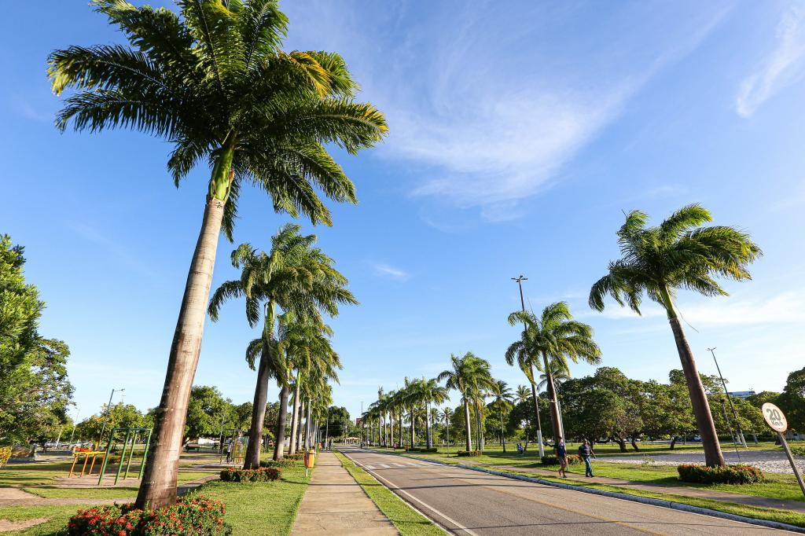

sementeira

O parque pode ser utilizado ser utilizado pelos aracajuanos e turistas para práica de atividades esportivas e de lazer, pesquisas ambietais, além de outras atividades em contato com a natureza. O espaço conta com parque fantil, campo de futebol, quadra poliesportivo, espaço com aparelhos para exercícios físicos, pista para camhada, quiosque para piqueniques, sanitários, lagos e ilumação adequada.
Atrativos do Parque da Sementeira
- Parque infantil
- Campo de fulbito
- Quadra poliesportiva
- Aparelhos paara exercícios físicos
- Pista para caminhada
- Quiosque para piqueniques
- Sanitários
- Lagos e áreas verdes
- Iluminação adequada para visitas noturnas